Pre-lecture materials
Acknowledgements
Material for this lecture was borrowed and adopted from
- An Introduction to Statistical Learning, 2nd edition by James, Witten, Hastie and Tibshirani
- https://jhu-advdatasci.github.io/2019/
Learning objectives
At the end of this lesson you will:
- Understand what are hyperplanes, maximal margin hyperplanes, support vector classifiers (with and without linear boundaries), and Support Vector Machines (SVM)
- Know how to build a SVM with the
caretR package
Motivation
In this lecture, we will be asking the question:
Can we identify a voice as male or female, based upon acoustic properties of the voice and speech?

Determining a person’s gender as male or female, based upon a sample of their voice seems to initially be a feasible task. Often, the human ear can detect the difference between a male or female voice within the first few spoken words. However, designing a computer program to do this turns out to be a bit trickier.
To accomplish that goal, we will learn about another machine learning algorithm called support vector machines (SVMs). SVMs have been around since the 1990s and originated of the computer science community. They are form of supervised learning.
SVMs are widely applied to pattern classification and regression problems, such as:
- Handwritten digits classification
- Speech recognition
- Facial expression classification
- Text classification
The original idea was to build a classifier for which training data can be separated using some type of linear hyperplane. We want a hyperplane that maximizes the distance between the hyperplane to the nearest data point in either class.
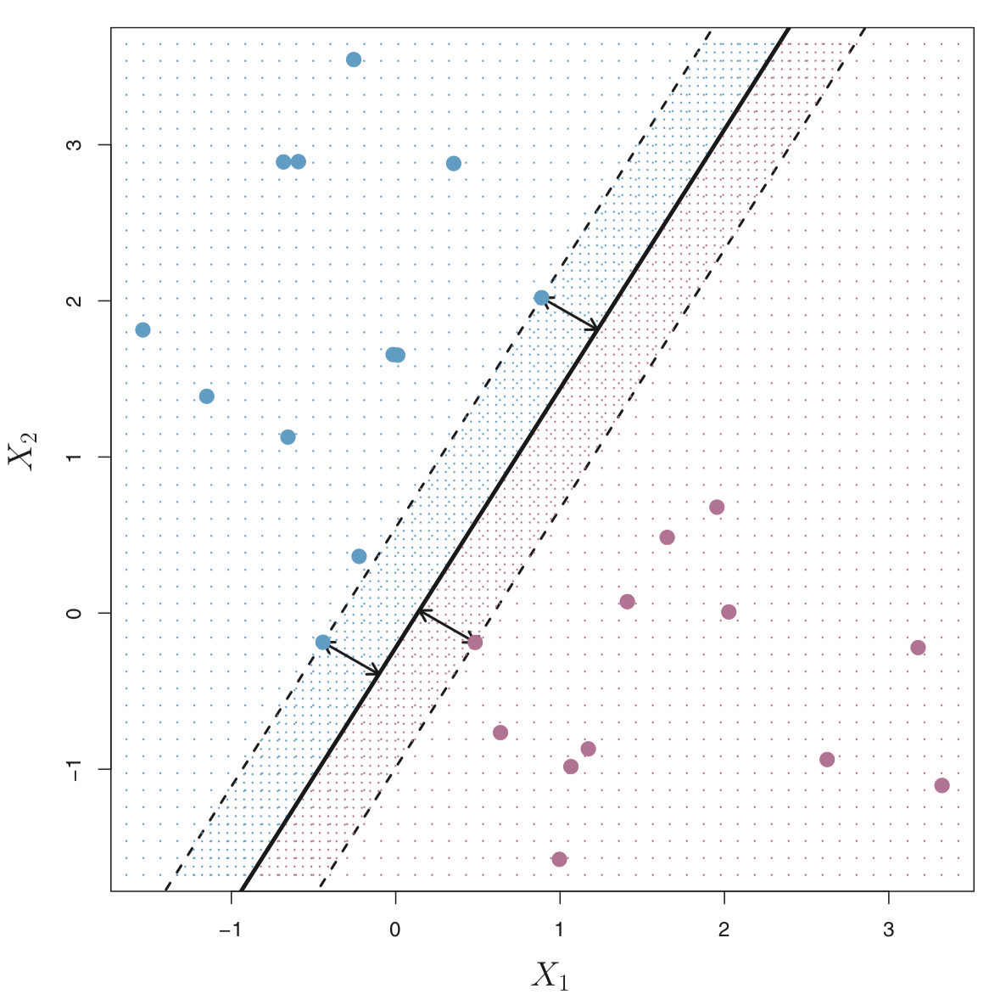
In the case when we cannot draw a linear hyperplane to separate the two classes of points (this is more typical), we can adapt the idea and build a non-linear classifier. The key idea is to apply a “kernel trick”. We’ll learn more about that later in the lecture.
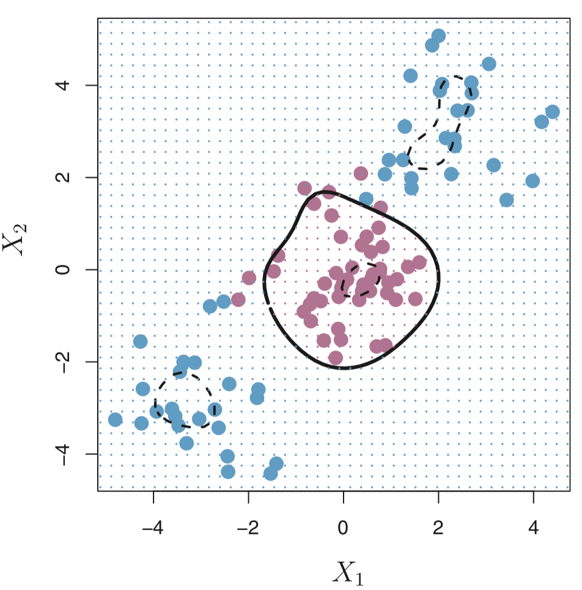
Note: We will focus on the case when there are only two classes, but there are also extensions of SVMs in the case when there are more than two classes.
How does it work?
Given a dataset with a set of features and set of labels, we want to build a support vector machine (SVMs) to predict classes for new observations.
To understand what is a SVM let’s build up to it and consider some other types of classifiers (or hyperplanes) and how it relates to SVMs. First, let’s use a plain ole hyperplane.
Hyperplanes
A hyperplane is formally defined as a flat affine subspace of a dimension \(p-1\).
For example, in two dimensions, a hyperplane is a flat one-dimensional subspace (or a line). In this case, a hyperplane is defined by
\[ \beta_0 + \beta_1 X_1 + \beta_2 X_2 = 0 \]
for \(X = (X_1, X_2)^{T}\) and for parameters \(\beta_0\), \(\beta_1\) and \(\beta_2\). If there are \(X = (X_1, X_2)^{T}\) that do not satisify the above, i.e
\[ \beta_0 + \beta_1 X_1 + \beta_2 X_2 > 0 \]
or
\[ \beta_0 + \beta_1 X_1 + \beta_2 X_2 < 0 \]
Then, we can think of the hyperplane as dividing the two-dimensional space into two halves.
In the figure below, the hyperplane \(1 + 2X_1 + 3X_2 = 0\) is shown. The set of points in the blue region is \(1 + 2X_1 + 3X_2 > 0\) and the purple region is the set of points for which \(1 + 2X_1 + 3X_2 < 0\).
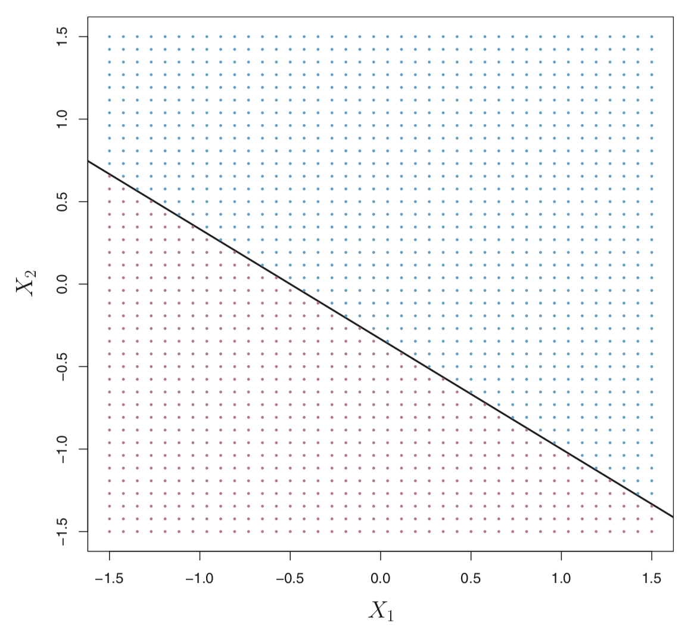
More formally, let’s say we have a set of \(n\) training observations \(X_i = (X_{i1}, X_{i2})^T\) in with two features (\(p=2\)) and each training observation has a known label \(y_i \in \{-1,1\}\) where the observations from the blue class are labeled as \(y_i = 1\) and those from the purple class are \(y_i = -1\).
A hyperplane that separates the observations
\[ \beta_0 + \beta_1 X_1 + \beta_2 X_2 > 0 \text{ if } y_i = 1 \]
or
\[ \beta_0 + \beta_1 X_1 + \beta_2 X_2 < 0 \text{ if } y_i = -1 \] or
\[ y_i (\beta_0 + \beta_1 X_1 + \beta_2 X_2) < 0 \text{ for all } i\in(1, \ldots, n) \]
There can be many hyperplanes that separate these points in our example. For example, the figure on the left shows three hyperplanes in black (out of many). If we pick one hyperplane, the figure on the right shows a grid of blue an purple points indicating the decision rule made by a classifer defined by this hyperplane.
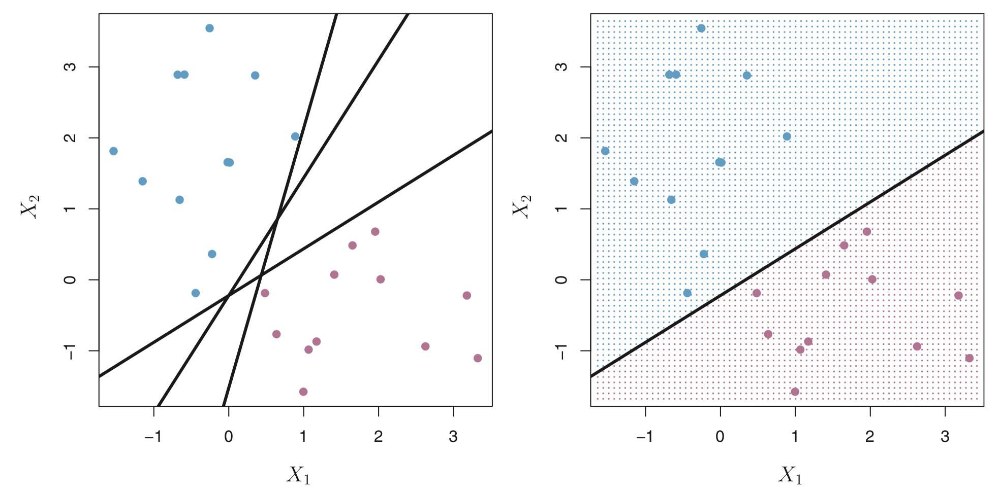
More formally, we can classify a test observation \(x^{*}\) based on the sign of of
\[ f(x^{*}) = \beta_0 + \beta_1 x_1^{*} + \beta_2 x_2^{*} \]
- If \(f(x^{*})\) is positive, then we assign \(x^{*}\) to the blue class.
- If \(f(x^{*})\) is negative, then we assign \(x^{*}\) to the purple class.
In addition to the sign, we can also consider the magnitude of \(f(x^{*})\).
- If \(f(x^{*})\) is far from zero, then \(x^{*}\) is far away from the hyperplane (i.e. more confidence in our class assignment).
- If \(f(x^{*})\) is close to zero, then \(x^{*}\) is close to the hyperplane (i.e. less certain about the class assignment for \(x^{*}\)).
But, the problem is this still can lead to an infinite number of possible separating hyperplanes. How can we decide what is the “best” hyperplane?
Maximal Margin Hyperplane (or Classifer)
The maximal margin hyperplane is the hyperlane that separates the farthest from training observations.
In the figure below, the maximal margin hyperplane is shown as a solid line.
The margin is the distance from the solid line to either of the dashed lines.
The two blue points and the purple point that lie on the dashed lines are the support vectors (they “support” the maximal margin hyperplane in the sense that if these points were moved slightly then the maximal margin hyperplane would move as well), and the distance from those points to the margin is indicated by arrows.
The purple and blue grid indicates the decision rule made by a classifier based on this separating hyperplane.
This is a really power idea and this is what SVMs are built on. BUT
Pro tip: Although the maximal margin classifier is often successful, it can also lead to overfitting when \(p\) is large. So if you use this, it’s important to explore the use of cross-validation.
To construct a maximal margin classifier using \(n\) training observations \(x_1, \ldots, x_n \in \mathbb{R}^p\) and associated class labels \(y_1 \ldots, y_n \in \{-1, 1\}\), the maximal margin hyperplane is the solution to the optimization problem:
\[ \underset{\beta_0, \beta_1, \ldots, \beta_p, M}{\text{maximize }} M \] subject to \(\sum_{j=1}^p \beta_j^2 = 1\) and
\[ y_i (\beta_0 + \beta_1 x_1 + \ldots + \beta_p x_p) \geq M \text{ for all } i\in(1, \ldots, n) \]
Note:
SVM uses L2 regularization on the \(\beta\) coefficients (like ridge regression) vs L1 regularization (like in Lasso regression)
L1 regularization might be better / less susceptible to outliers. In fact there are L1 SVMs
This guarantees that each observation will be on the correct side of the hyperplane and at least a distance of \(M\) from the hyperplane. Therefore, you can think of \(M\) as the margin of our hyperplane.
This works great if a separating hyperplane exists. However, many times, that isn’t true and there is no solution with \(M > 0\). So instead we can try to find a hyperplane that almost separates the classes (with some penalty or cost associated with each observation that is is on the wrong side of the hyperplane).
Support Vector Classifer
Consider the following data that cannot be separated by a hyperplane.
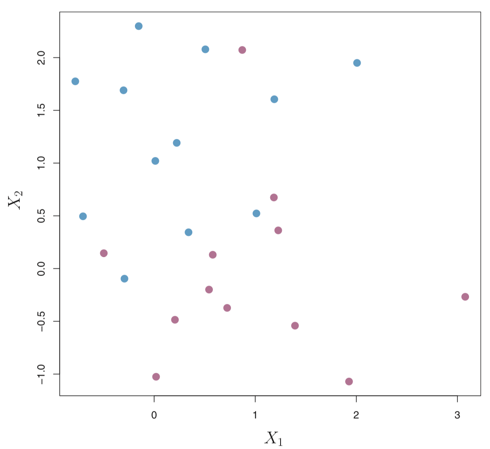
We could consider building a support vector classifer or a soft margin classifer that misclassifies a few training observations in order to do a better job of classifying the remaining observations.
The margin is soft because it can be violated by some of the training observations. An observation can be not only on the wrong side of the margin, but also on the wrong side of the hyperplane.
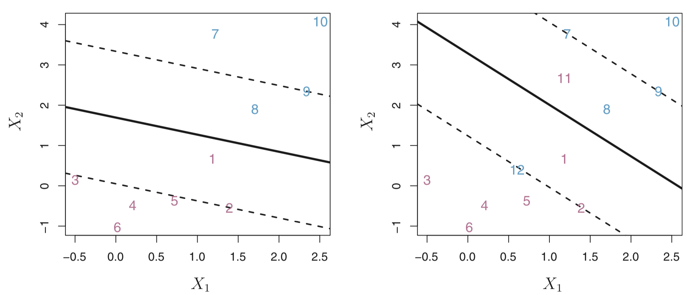
On the left there are observations that are on the right side of the hyperplane, but the wrong side of the margin. On the right are observations that are on the wrong side of the hyperplane and the wrong side of the margin.
In fact, when there is no separating hyperplane, such a situation is inevitable. Observations on the wrong side of the hyperplane correspond to training observations that are misclassified by the support vector classifier (i.e. right figure above).
Now, the optimization problem is:
\[ \underset{\beta_0, \beta_1, \ldots, \beta_p, \epsilon_1, \ldots, \epsilon_n, M}{\text{maximize}} M \] subject to \(\sum_{j=1}^p \beta_j^2 = 1\)
\[ y_i (\beta_0 + \beta_1 x_1 + \ldots + \beta_p x_p) \geq M (1-\epsilon_i) \] for all \(i\in(1, \ldots, n)\), \(\epsilon_i \geq 0\), \(\sum_{i=1}^n \epsilon_i \leq C\) where \(C\) is a nonnegative tuning parameter (typically chosen using cross-validation). The \(\epsilon_1, \ldots, \epsilon_n\) are often called slack variables that allow observations to be on the wrong side of the margin or hyperplane.
Note:
- L2 regularization in SVMs is imposes a bigger (quadratic vs linear) loss for points that violate the margin in SVMs
Comments on the tuning parameter \(C\)
We see that \(C\) bounds the sum of the \(\epsilon_i\)’s, so you think about it as a “budget” for the amount of margin that can be violated in the \(n\) observations.
- If \(C = 0\) \(\Rightarrow\) No budget for violations to the margin and \(\epsilon_1 = \ldots = \epsilon_n = 0\). This is essentially the maximal margin hyperplane (but only if the two classes are separable).
- If \(C > 0\) \(\Rightarrow\) No more than \(C\) observations can be on the wrong side of the hyperplane, because if an observation is on the wrong side of the hyperplane then \(\epsilon_i > 1\), and we saw above, this requires that \(\sum_{i=1}^n \epsilon_i \leq C\).
In general, as the budget \(C\) increases, we become more tolerant of violations to the margin, and so the margin will widen. Conversely, as \(C\) decreases, we become less tolerant of violations to the margin and so the margin narrows.
Another way of thinking about \(C\) is that it basically controls the bias-variance trade-off.
- When \(C\) is small, we seek narrow margins that are rarely violated; this amounts to a classifier that is highly fit to the data, which may have low bias but high variance.
- When \(C\) is larger, the margin is wider and we allow more violations to it; this amounts to fitting the data less hard and obtaining a classifier that is potentially more biased but may have lower variance.
Interestingly, it turns out that only the observations that lie on the margin or that violate the margin (also known as support vectors) will affect the hyperplane (and hence classification).
This make sense. But why?
When \(C\) is large, the margin is wide, and many observations violate the margin, thus there are many support vectors (potentially more bias, but less variance). When \(C\) is small, the margin is small, not many observations violate the margin, thus very few support vectors (potentially low bias and high variance).
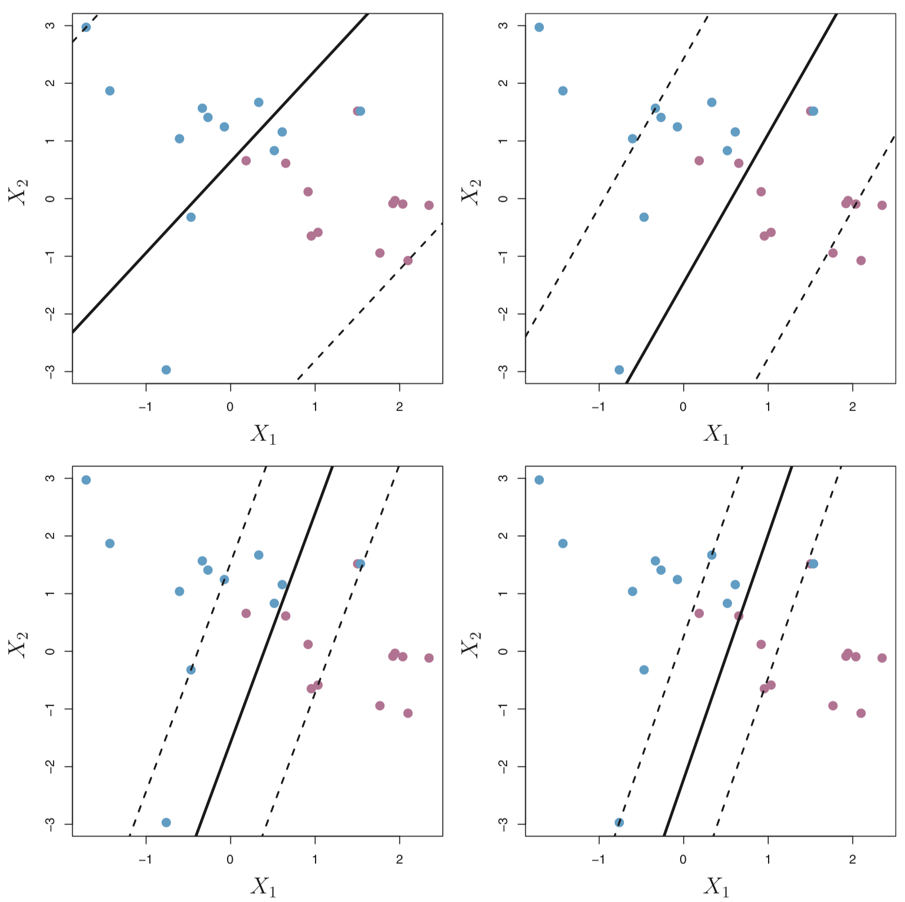
OK, but what if we want to consider non-linear boundaries?
Support Vector Classifier with Non-Linear boundaries
Thus far, the support vector classifier has been very useful for classification in the setting with two classes and if the classes can be separated by a linear hyperplane (with or without some violations of margins of error). However, more often than not, the boundry will need to be more flexible and consider non-linear class boundaries.
Consider the following data on the left plot. A linear support classifier (applied in the right plot) will perform poorly.
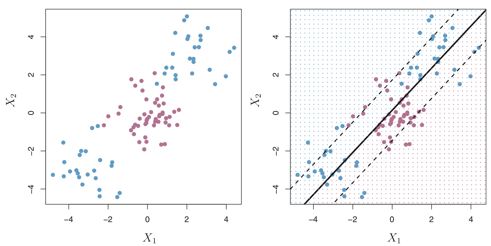
When using linear regression, if there is a non-linear relationship between the predictors and outcome, a solution is to enlarge the feature space to include e.g. quadratic and cubic terms
Therefore, a solution to our problem is to enlarge the feature space using functions of the predictors (i.e. quadratic and cubic terms or higher) in order to address the non-linearity.
So instead of fitting a support vector classifier with \(p\) features \((X_1, X_2, \ldots, X_p)\), we could try using \(2p\) features \((X_1, X_1^2, X_2, X_2^2, \ldots, X_p, X_p^2)\).
Now, the optimization problem becomes:
\[ \underset{\beta_0, \beta_{11}, \beta_{12}, \ldots, \beta_{p1}, \beta_{p2}, \epsilon_1, \ldots, \epsilon_n, M}{\text{maximize}} M \] subject to
\[ y_i (\beta_0 + \sum_{j=1}^p \beta_{j1} x_{ij} + \sum_{j=1}^p \beta_{j2} x_{ij}^2) \geq M (1-\epsilon_i) \] \(\sum_{i=1}^n \epsilon_i \leq C\), \(\epsilon_i \geq 0\), \(\sum_{j=1}^p \sum_{k=1}^2 \beta_{jk}^2 = 1\)
Why does this lead to a non-linear boundary?
In the enlarged feature space, the decision boundary that is found is still linear. But in the original feature space, the decision boundary is of the form \(q(x) = 0\), where \(q\) is a quadratic polynomial, and its solutions are generally non-linear.
As you can imagine, there are many ways to enlarge the feature space e.g. include higher-order polynomial terms or interaction terms such as \(X_1 X_2\). We could easily end up with a large number of features leading to unmanagable computations.
In the next section, we will learn about the support vector machine that allows us to enlarge the feature space in an efficient way.
Support Vector Machines
The support vector machine (SVM) is an extension of the support vector classifier that results from enlarging the feature space in a specific way, using kernels.
The details of how exactly how the support vector classifier is computed is quite technical, so I won’t go into it here. However, it’s sufficient to know that the solution to the support vector classifier problem involves only the inner products of the observations (as opposed to the observations themselves). The inner product of two observations \(x_i\) and \(x_{i^{'}}\) is given by
\[ \langle x_i, x_{i^{'}} \rangle = \sum_{j=1}^P x_{ij} x_{i^{'}j}\]
For example, the linear support vector classifier can be represented as
\[ f(x) = \beta_0 + \sum_{i=1}^n \alpha_i \langle x, x_{i} \rangle \]
where there are \(n\) parameters \(\alpha_i\) (one per training observation).
To estimate the parameters \(\alpha_1, \ldots, \alpha_n\) and \(\beta_0\), we need to take \({n \choose 2}\) inner products between all pairs of training observations \(x_i\) and \(x_{i^{'}}\).
To evaluate the function \(f(x)\), all we need is the inner product between a new point \(x\) and each of the training points \(x_i\). Interestingly, it turns out that \(\alpha_i\) is nonzero only for the support vectors (points in the margin). Another way of stating this is if a training observation is not a support vector, then its \(\alpha_i\) is equals zero.
So if we consider \(\mathcal{S}\) as the collection of indicies for support points, then we can rewrite the above to
\[ f(x) = \beta_0 + \sum_{i \in \mathcal{S}} \alpha_i \langle x, x_{i} \rangle \] And this involves a lot fewer points!
Ok, now suppose that instead of the inner product, we consider a generalization of the inner product of the form
\[ K( x_i, x_{i^{'}} ) \]
where \(K\) is some function called a kernel.
You can think of a kernel as a function that quantifies the similiarity of two observations. For example,
\[ K( x_i, x_{i^{'}} ) = \sum_{j=1}^p x_{ij} x_{i^{'}j} \]
is a linear kernel (linear in the features) and would return the support vector classifier.
In contrast, this kernel is called a polynomial kernel of degree \(d\). If \(d > 1\), then the support vector classifier results in a more flexible boundary.
\[ K( x_i, x_{i^{'}} ) = \Big(1 + \sum_{j=1}^p x_{ij} x_{i^{'}j} \Big)^d \]
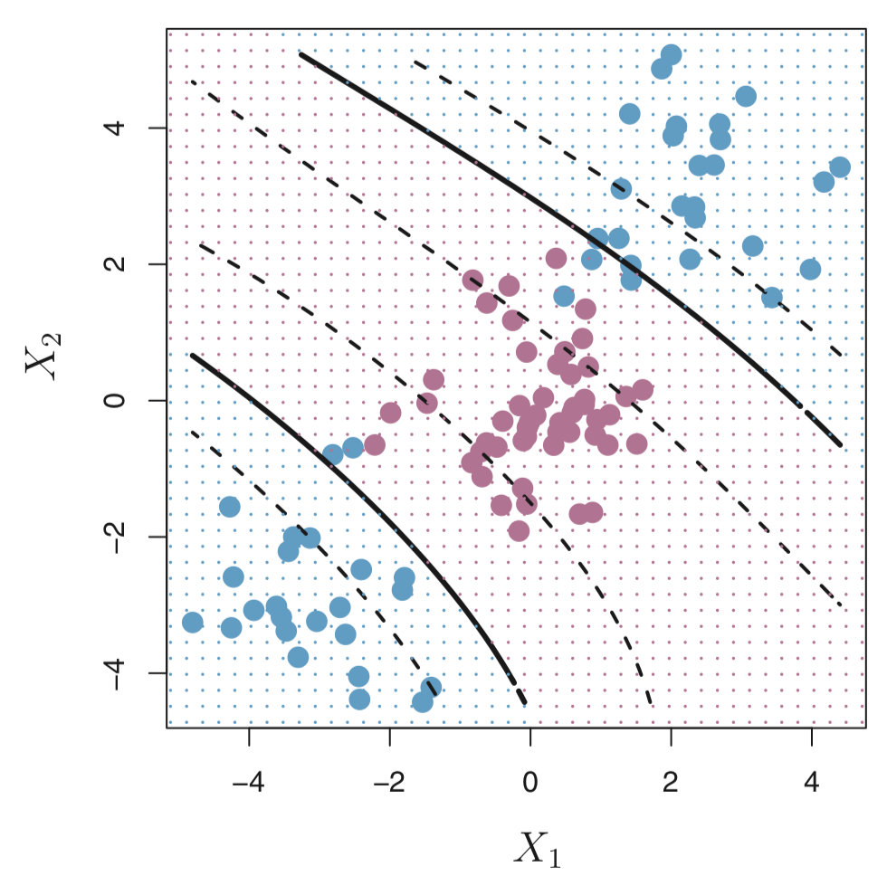
When the support vector classifier is combined with non-linear kernels (such as above), the resulting classifier is known as a support vector machine.
Another popular kernel is the radial kernel:
\[ K( x_i, x_{i^{'}} ) = \exp \Big(-\gamma \sum_{j=1}^p (x_{ij} - x_{i^{'}j})^2 \Big) \]
Advantages
- SVMs are effective when the number of features is quite large.
- It works effectively even if the number of features are greater than the number of samples.
- Non-Linear data can also be classified using customized hyperplanes built by using kernel trick.
- It is a robust model to solve prediction problems since it maximizes margin.
Disadvantages
- The biggest limitation of SVMs is the choice of the kernel. The wrong choice of the kernel can lead to an increase in error percentage.
- With a greater number of samples, it can result in poor performance.
- SVMs have good generalization performance but they can be extremely slow in the test phase.
- SVMs have high algorithmic complexity and extensive memory requirements due to the use of quadratic programming.
Let’s try out these concepts on the data from our original question:
Can we identify a voice as male or female, based upon acoustic properties of the voice and speech?
Data
The data we will use is from kaggle and is available in a .csv file.
A description of the data from Kaggle:
“This database was created to identify a voice as male or female, based upon acoustic properties of the voice and speech. The dataset consists of 3,168 recorded voice samples, collected from male and female speakers. The voice samples are pre-processed by acoustic analysis in R using the seewave and tuneR packages.”
We can actually dig a bit deeper and go to the website where the data origianlly came from to learn more about how the dataset was created:
“Each voice sample is stored as a
.WAVfile, which is then pre-processed for acoustic analysis using the specan function from the WarbleR R package. Specan measures 22 acoustic parameters on acoustic signals for which the start and end times are provided.”
“The output from the pre-processed WAV files were saved into a CSV file, containing 3168 rows and 21 columns (20 columns for each feature and one label column for the classification of male or female).”
The following acoustic properties of each voice are measured (described on Kaggle’s website):
| Variable | Description |
|---|---|
meanfreq |
mean frequency (in kHz) |
sd |
standard deviation of frequency |
median |
median frequency (in kHz) |
Q25 |
first quantile (in kHz) |
Q75 |
third quantile (in kHz) |
IQR |
interquantile range (in kHz) |
skew |
skewness |
kurt |
kurtosis |
sp.ent |
spectral entropy |
sfm |
spectral flatness |
mode |
mode frequency |
centroid |
frequency centroid |
peakf |
peak frequency (frequency with highest energy) |
meanfun |
average of fundamental frequency measured across acoustic signal |
minfun |
minimum fundamental frequency measured across acoustic signal |
maxfun |
maximum fundamental frequency measured across acoustic signal |
meandom |
average of dominant frequency measured across acoustic signal |
mindom |
minimum of dominant frequency measured across acoustic signal |
maxdom |
maximum of dominant frequency measured across acoustic signal |
dfrange |
range of dominant frequency measured across acoustic signal |
modindx |
modulation index. Calculated as the accumulated absolute difference between adjacent measurements of fundamental frequencies divided by the frequency range |
label |
male or female |
Import data
First, we load a few R packages
Let’s read in the voice.csv file into R using the read_csv() function in the readr R package.
voice <- read_csv(here("data", "voice.csv"))
voice
# A tibble: 3,168 × 21
meanfreq sd median Q25 Q75 IQR skew kurt sp.ent
<dbl> <dbl> <dbl> <dbl> <dbl> <dbl> <dbl> <dbl> <dbl>
1 0.0598 0.0642 0.0320 0.0151 0.0902 0.0751 12.9 274. 0.893
2 0.0660 0.0673 0.0402 0.0194 0.0927 0.0733 22.4 635. 0.892
3 0.0773 0.0838 0.0367 0.00870 0.132 0.123 30.8 1025. 0.846
4 0.151 0.0721 0.158 0.0966 0.208 0.111 1.23 4.18 0.963
5 0.135 0.0791 0.125 0.0787 0.206 0.127 1.10 4.33 0.972
6 0.133 0.0796 0.119 0.0680 0.210 0.142 1.93 8.31 0.963
7 0.151 0.0745 0.160 0.0929 0.206 0.113 1.53 5.99 0.968
8 0.161 0.0768 0.144 0.111 0.232 0.121 1.40 4.77 0.959
9 0.142 0.0780 0.139 0.0882 0.209 0.120 1.10 4.07 0.971
10 0.134 0.0804 0.121 0.0756 0.202 0.126 1.19 4.79 0.975
# … with 3,158 more rows, and 12 more variables: sfm <dbl>,
# mode <dbl>, centroid <dbl>, meanfun <dbl>, minfun <dbl>,
# maxfun <dbl>, meandom <dbl>, mindom <dbl>, maxdom <dbl>,
# dfrange <dbl>, modindx <dbl>, label <chr>Next, let’s get an overall summary of the range of values in the dataset.
summary(voice)
meanfreq sd median
Min. :0.03936 Min. :0.01836 Min. :0.01097
1st Qu.:0.16366 1st Qu.:0.04195 1st Qu.:0.16959
Median :0.18484 Median :0.05916 Median :0.19003
Mean :0.18091 Mean :0.05713 Mean :0.18562
3rd Qu.:0.19915 3rd Qu.:0.06702 3rd Qu.:0.21062
Max. :0.25112 Max. :0.11527 Max. :0.26122
Q25 Q75 IQR
Min. :0.0002288 Min. :0.04295 Min. :0.01456
1st Qu.:0.1110865 1st Qu.:0.20875 1st Qu.:0.04256
Median :0.1402864 Median :0.22568 Median :0.09428
Mean :0.1404556 Mean :0.22476 Mean :0.08431
3rd Qu.:0.1759388 3rd Qu.:0.24366 3rd Qu.:0.11418
Max. :0.2473469 Max. :0.27347 Max. :0.25223
skew kurt sp.ent
Min. : 0.1417 Min. : 2.068 Min. :0.7387
1st Qu.: 1.6496 1st Qu.: 5.670 1st Qu.:0.8618
Median : 2.1971 Median : 8.319 Median :0.9018
Mean : 3.1402 Mean : 36.569 Mean :0.8951
3rd Qu.: 2.9317 3rd Qu.: 13.649 3rd Qu.:0.9287
Max. :34.7255 Max. :1309.613 Max. :0.9820
sfm mode centroid
Min. :0.03688 Min. :0.0000 Min. :0.03936
1st Qu.:0.25804 1st Qu.:0.1180 1st Qu.:0.16366
Median :0.39634 Median :0.1866 Median :0.18484
Mean :0.40822 Mean :0.1653 Mean :0.18091
3rd Qu.:0.53368 3rd Qu.:0.2211 3rd Qu.:0.19915
Max. :0.84294 Max. :0.2800 Max. :0.25112
meanfun minfun maxfun
Min. :0.05557 Min. :0.009775 Min. :0.1031
1st Qu.:0.11700 1st Qu.:0.018223 1st Qu.:0.2540
Median :0.14052 Median :0.046110 Median :0.2712
Mean :0.14281 Mean :0.036802 Mean :0.2588
3rd Qu.:0.16958 3rd Qu.:0.047904 3rd Qu.:0.2775
Max. :0.23764 Max. :0.204082 Max. :0.2791
meandom mindom maxdom
Min. :0.007812 Min. :0.004883 Min. : 0.007812
1st Qu.:0.419828 1st Qu.:0.007812 1st Qu.: 2.070312
Median :0.765795 Median :0.023438 Median : 4.992188
Mean :0.829211 Mean :0.052647 Mean : 5.047277
3rd Qu.:1.177166 3rd Qu.:0.070312 3rd Qu.: 7.007812
Max. :2.957682 Max. :0.458984 Max. :21.867188
dfrange modindx label
Min. : 0.000 Min. :0.00000 Length:3168
1st Qu.: 2.045 1st Qu.:0.09977 Class :character
Median : 4.945 Median :0.13936 Mode :character
Mean : 4.995 Mean :0.17375
3rd Qu.: 6.992 3rd Qu.:0.20918
Max. :21.844 Max. :0.93237 A quick glimpse over the data shows us that we have 20 numeric columns with differing ranges and magnitudes.
Wrangling data
It would be nice to get a picture of how these features are different across the male and female observations. One way to do that is to use ggplot() to explore differences in distribution with boxplots and histograms.
First, let’s transform the data from a wide format to a long format using the pivot_longer() function in the tidyr package.
voice_long <- voice %>%
pivot_longer(cols = -label, names_to = "feature", values_to = "value")
head(voice_long)
# A tibble: 6 × 3
label feature value
<chr> <chr> <dbl>
1 male meanfreq 0.0598
2 male sd 0.0642
3 male median 0.0320
4 male Q25 0.0151
5 male Q75 0.0902
6 male IQR 0.0751We also can transform the label column which contains male and female character strings into 1s and 0s where 1 represents male and 0 represents `female.
table(voice$label)
female male
1584 1584 Just as a sanity check:
table(voice_labels, voice$y)
voice_labels 0 1
female 1584 0
male 0 1584Whew ok good!
EDA
If we wanted to create boxplots of all twenty variables colored by whether the observation was male or female, we can use the
voice_long %>%
ggplot(aes(label, value, colour = label)) +
geom_boxplot(alpha = 0.5) +
facet_wrap(~ feature, scales='free_y', ncol = 4) +
labs(x = NULL, y = NULL) +
theme_minimal()
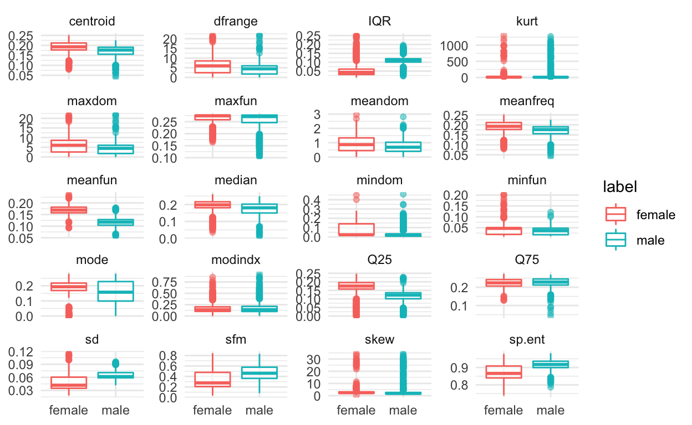
voice_long %>%
ggplot(aes(value, fill = label)) +
geom_density(alpha = 0.5) +
facet_wrap(~ feature, scales='free', ncol = 4) +
labs(x = NULL, y = NULL) +
theme_minimal()
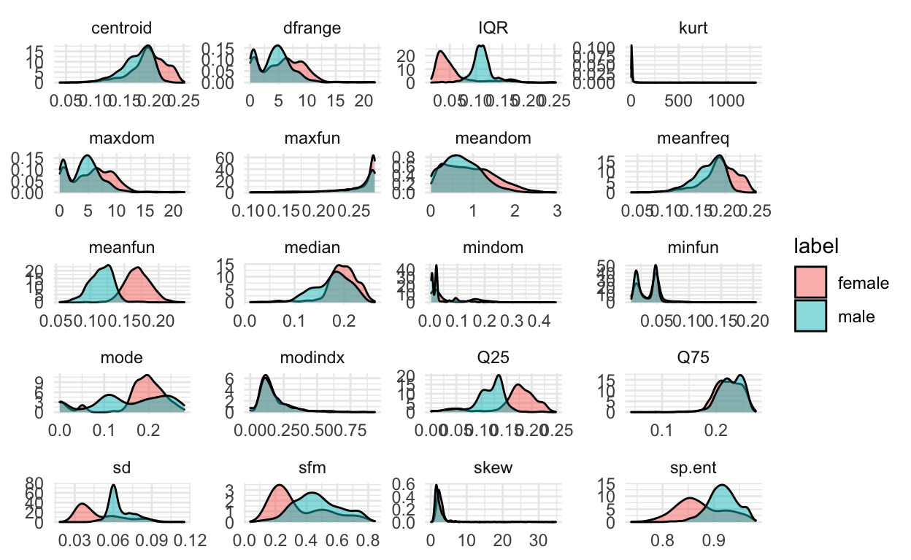
These are great to look at the distributions separately, but it would also be good to get an idea of how the features are related to each other.
To do that, another useful plotting function for exploratory data analysi is the ggpairs() function from the GGally package:
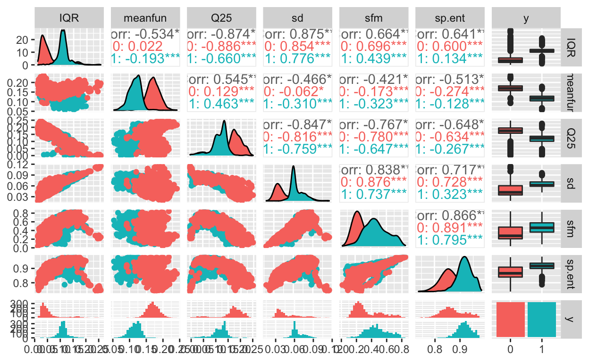
Classification models
Next, we will build a few models to classify the recorded voice samples as male or female using features available. First, we will look at SVMs and then we will compare to other models that we have already seen that are useful for classification including logistic regression and random forests.
Support Vector Machines
Before we build an SVM classifier, let’s split our data into a train_set and test_set using the createDataParition() function in the caret R package.
We’ll just split it in half for the purposes of the lecture.
set.seed(1234)
set.seed(1234)
train_set = createDataPartition(y = voice$y,
p = 0.5, list=FALSE)
train_dat = voice[train_set,]
test_dat = voice[-train_set,]
We can look at the dimensions of the two datasets to make sure they have been split in half.
And they have! Ok, before we build a SVM using train() function (we’ve seen this before), let’s use the trainControl() function. Here, we select method=cv with 10-fold cross-validation.
control <- trainControl(method="cv", number=10)
metric <- "Accuracy"
SVM with linear kernel
First, we will use the train() function from the caret R package with the argument method=svmLinear to build a SVM with linear kernel.
fit_svmLinear <- train(y~., data=train_dat, method="svmLinear",
metric=metric, trControl=control)
fit_svmLinear
Support Vector Machines with Linear Kernel
1584 samples
20 predictor
2 classes: '0', '1'
No pre-processing
Resampling: Cross-Validated (10 fold)
Summary of sample sizes: 1424, 1426, 1426, 1425, 1426, 1426, ...
Resampling results:
Accuracy Kappa
0.9722233 0.9444468
Tuning parameter 'C' was held constant at a value of 1newdata <- as.data.frame(select(train_dat, -y))
pred_svmLinear <- predict(fit_svmLinear, newdata)
confusionMatrix(reference=train_dat$y, pred_svmLinear)
Confusion Matrix and Statistics
Reference
Prediction 0 1
0 775 19
1 17 773
Accuracy : 0.9773
95% CI : (0.9687, 0.984)
No Information Rate : 0.5
P-Value [Acc > NIR] : <2e-16
Kappa : 0.9545
Mcnemar's Test P-Value : 0.8676
Sensitivity : 0.9785
Specificity : 0.9760
Pos Pred Value : 0.9761
Neg Pred Value : 0.9785
Prevalence : 0.5000
Detection Rate : 0.4893
Detection Prevalence : 0.5013
Balanced Accuracy : 0.9773
'Positive' Class : 0
SVM with polynomial kernel
Next, we will use the train() function from the caret R package with the argument method=svmPoly to build a SVM with polynomial kernel.
fit_svmPoly <- train(y~., data=train_dat, method="svmPoly",
metric=metric, trControl=control)
fit_svmPoly
Support Vector Machines with Polynomial Kernel
1584 samples
20 predictor
2 classes: '0', '1'
No pre-processing
Resampling: Cross-Validated (10 fold)
Summary of sample sizes: 1425, 1425, 1426, 1426, 1426, 1425, ...
Resampling results across tuning parameters:
degree scale C Accuracy Kappa
1 0.001 0.25 0.8876682 0.7752831
1 0.001 0.50 0.8965130 0.7929541
1 0.001 1.00 0.9123079 0.8245470
1 0.010 0.25 0.9318884 0.8637212
1 0.010 0.50 0.9564923 0.9129594
1 0.010 1.00 0.9653372 0.9306550
1 0.100 0.25 0.9684818 0.9369517
1 0.100 0.50 0.9684738 0.9369354
1 0.100 1.00 0.9728923 0.9457742
2 0.001 0.25 0.8965130 0.7929541
2 0.001 0.50 0.9116750 0.8232812
2 0.001 1.00 0.9262081 0.8523590
2 0.010 0.25 0.9634344 0.9268506
2 0.010 0.50 0.9672160 0.9344180
2 0.010 1.00 0.9691028 0.9381925
2 0.100 0.25 0.9690829 0.9381582
2 0.100 0.50 0.9716105 0.9432131
2 0.100 1.00 0.9722474 0.9444863
3 0.001 0.25 0.9078776 0.8156823
3 0.001 0.50 0.9205278 0.8409935
3 0.001 1.00 0.9413622 0.8826757
3 0.010 0.25 0.9672160 0.9344182
3 0.010 0.50 0.9691028 0.9381941
3 0.010 1.00 0.9678370 0.9356624
3 0.100 0.25 0.9690789 0.9381492
3 0.100 0.50 0.9716066 0.9432057
3 0.100 1.00 0.9747632 0.9495179
Accuracy was used to select the optimal model using the
largest value.
The final values used for the model were degree = 3, scale = 0.1
and C = 1.newdata <- as.data.frame(select(train_dat, -y))
pred_svmPoly <- predict(fit_svmPoly, newdata)
confusionMatrix(reference=train_dat$y, pred_svmPoly)
Confusion Matrix and Statistics
Reference
Prediction 0 1
0 789 3
1 3 789
Accuracy : 0.9962
95% CI : (0.9918, 0.9986)
No Information Rate : 0.5
P-Value [Acc > NIR] : <2e-16
Kappa : 0.9924
Mcnemar's Test P-Value : 1
Sensitivity : 0.9962
Specificity : 0.9962
Pos Pred Value : 0.9962
Neg Pred Value : 0.9962
Prevalence : 0.5000
Detection Rate : 0.4981
Detection Prevalence : 0.5000
Balanced Accuracy : 0.9962
'Positive' Class : 0
SVM with radial basis kernel
Next, we will use the train() function from the caret R package with the argument method=svmRadial to build a SVM with radial basis kernel.
fit_svmRadial <- train(y~., data=train_dat, method="svmRadial",
metric=metric, trControl=control)
fit_svmRadial
Support Vector Machines with Radial Basis Function Kernel
1584 samples
20 predictor
2 classes: '0', '1'
No pre-processing
Resampling: Cross-Validated (10 fold)
Summary of sample sizes: 1426, 1424, 1426, 1426, 1426, 1426, ...
Resampling results across tuning parameters:
C Accuracy Kappa
0.25 0.9658863 0.9317722
0.50 0.9722114 0.9444228
1.00 0.9747391 0.9494778
Tuning parameter 'sigma' was held constant at a value of 0.05522729
Accuracy was used to select the optimal model using the
largest value.
The final values used for the model were sigma = 0.05522729 and C = 1.newdata <- as.data.frame(select(train_dat, -y))
pred_svmRadial <- predict(fit_svmRadial, newdata)
confusionMatrix(reference=train_dat$y, pred_svmRadial)
Confusion Matrix and Statistics
Reference
Prediction 0 1
0 784 16
1 8 776
Accuracy : 0.9848
95% CI : (0.9775, 0.9903)
No Information Rate : 0.5
P-Value [Acc > NIR] : <2e-16
Kappa : 0.9697
Mcnemar's Test P-Value : 0.153
Sensitivity : 0.9899
Specificity : 0.9798
Pos Pred Value : 0.9800
Neg Pred Value : 0.9898
Prevalence : 0.5000
Detection Rate : 0.4949
Detection Prevalence : 0.5051
Balanced Accuracy : 0.9848
'Positive' Class : 0
Logistic regression
Now, just for fun, let’s compare to some other classification approaches that we have previously learned about.
First, let’s try logistic regression.
fit_glm <- train(y ~ ., data = train_dat, trControl = control,
method = 'glm', family = 'binomial')
fit_glm
Generalized Linear Model
1584 samples
20 predictor
2 classes: '0', '1'
No pre-processing
Resampling: Cross-Validated (10 fold)
Summary of sample sizes: 1426, 1425, 1425, 1425, 1425, 1426, ...
Resampling results:
Accuracy Kappa
0.9634026 0.9268036newdata <- as.data.frame(select(train_dat, -y))
pred_glm <- predict(fit_glm, newdata)
confusionMatrix(reference=train_dat$y, pred_glm)
Confusion Matrix and Statistics
Reference
Prediction 0 1
0 770 20
1 22 772
Accuracy : 0.9735
95% CI : (0.9643, 0.9808)
No Information Rate : 0.5
P-Value [Acc > NIR] : <2e-16
Kappa : 0.947
Mcnemar's Test P-Value : 0.8774
Sensitivity : 0.9722
Specificity : 0.9747
Pos Pred Value : 0.9747
Neg Pred Value : 0.9723
Prevalence : 0.5000
Detection Rate : 0.4861
Detection Prevalence : 0.4987
Balanced Accuracy : 0.9735
'Positive' Class : 0
That’s actually not so bad.
Random Forests
Next let’s try random forests.
fit_rf <- train(y~., data=train_dat, method="rf",
metric=metric, trControl=control)
So let’s compare random forest and logistic regression to the SVM fits.
class_results <- resamples(list(glm=fit_glm, rf=fit_rf,
fit_svmLinear=fit_svmLinear, fit_svmPoly=fit_svmPoly,
fit_svmRadial=fit_svmRadial))
summary(class_results)
Call:
summary.resamples(object = class_results)
Models: glm, rf, fit_svmLinear, fit_svmPoly, fit_svmRadial
Number of resamples: 10
Accuracy
Min. 1st Qu. Median Mean 3rd Qu.
glm 0.9493671 0.9511882 0.9621646 0.9634026 0.9731510
rf 0.9493671 0.9637867 0.9715986 0.9715747 0.9811022
fit_svmLinear 0.9430380 0.9684042 0.9746835 0.9722233 0.9794304
fit_svmPoly 0.9559748 0.9653690 0.9779277 0.9747632 0.9811022
fit_svmRadial 0.9493671 0.9699367 0.9749214 0.9747391 0.9810127
Max. NA's
glm 0.9873418 0
rf 0.9937107 0
fit_svmLinear 0.9937107 0
fit_svmPoly 0.9873418 0
fit_svmRadial 0.9874214 0
Kappa
Min. 1st Qu. Median Mean 3rd Qu.
glm 0.8987342 0.9024092 0.9243240 0.9268036 0.9463027
rf 0.8987342 0.9275622 0.9431962 0.9431465 0.9621966
fit_svmLinear 0.8860759 0.9368090 0.9493671 0.9444468 0.9588608
fit_svmPoly 0.9119114 0.9307089 0.9558544 0.9495179 0.9622011
fit_svmRadial 0.8987342 0.9398734 0.9498418 0.9494778 0.9620253
Max. NA's
glm 0.9746835 0
rf 0.9874199 0
fit_svmLinear 0.9874219 0
fit_svmPoly 0.9746835 0
fit_svmRadial 0.9748418 0dotplot(class_results)
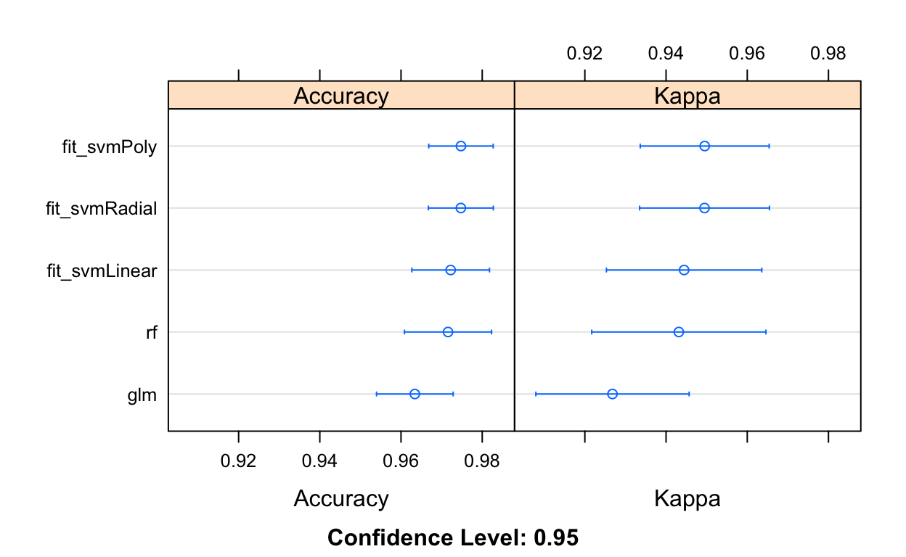
So it looks like SVM does give us a bit of a performance boost over logistic regression or random forests.
Bagging and boosting
What about bagging or boosting? Here, we try comparing existing results to both bagging and boosting (what we learned previously in class).
fit_treebag <- train(y~., data=train_dat, method="treebag",
metric=metric, trControl=control)
fit_boost <- train(y~., data=train_dat, method="gbm",
metric=metric, trControl=control, verbose = FALSE)
# summarize results
class_results <- resamples(list(glm=fit_glm, rf=fit_rf,
fit_svmLinear=fit_svmLinear, fit_svmPoly=fit_svmPoly,
fit_svmRadial=fit_svmRadial,
fit_treebag = fit_treebag,
fit_boost = fit_boost))
dotplot(class_results)
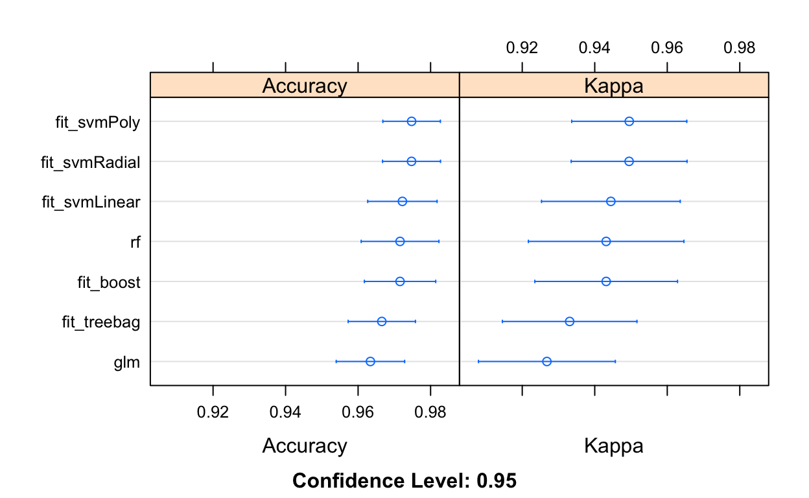
Checking test error rate
OK, so now that I have selected the SVM (Poly) classifier as the one that I will use (built on our train_dat), we can classify the recorded voice samples in our test_dat using the predict() function.
newdata <- as.data.frame(select(test_dat, -y))
pred_svmPoly_test <- predict(fit_svmPoly, newdata)
confusionMatrix(reference=test_dat$y, pred_svmPoly_test)
Confusion Matrix and Statistics
Reference
Prediction 0 1
0 778 22
1 14 770
Accuracy : 0.9773
95% CI : (0.9687, 0.984)
No Information Rate : 0.5
P-Value [Acc > NIR] : <2e-16
Kappa : 0.9545
Mcnemar's Test P-Value : 0.2433
Sensitivity : 0.9823
Specificity : 0.9722
Pos Pred Value : 0.9725
Neg Pred Value : 0.9821
Prevalence : 0.5000
Detection Rate : 0.4912
Detection Prevalence : 0.5051
Balanced Accuracy : 0.9773
'Positive' Class : 0